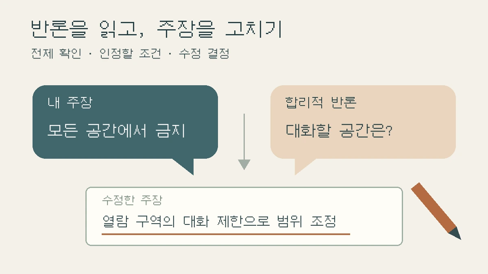

반론은 어떻게 써야 할까? 인정할 조건부터 주장의 수정까지
반대 의견을 붙이고도 결론이 그대로라면 주장 속 전제를 확인하세요. 가상 도서관 자료의 수정 전후 문단으로 반론의 이유·인정할 조건·유지와 수정의 결정을 안내합니다.

“반대 의견도 쓰라고 해서 마지막에 ‘물론 단점도 있다’를 붙였어요.” 그다음 문장은 “그래도 장점이 더 많으므로 시행해야 한다”입니다. 반론은 들어갔지만, 왜 원래 주장을 유지하는지는 여전히 비어 있습니다.
이번 칼럼은 내 주장에 대한 타당한 반론 하나를 골라, 근거에 맞게 답하고 주장을 고치는 방법을 다룹니다. 자료 부족 같은 한계를 나열하는 일이나 찬반 의견을 반씩 소개하는 일과는 다릅니다. 이미 쓴 본론에서 ‘따라서 ___해야 한다’ 또는 ‘이 표현은 ___를 뜻한다’라는 판단 문장을 하나 꺼내세요. 모든 보고서에 찬반 구조를 억지로 넣을 필요는 없습니다. 논증이 필요한 과제인지, 관찰·계산 보고인지부터 학교 안내에서 확인합니다.
반론은 내 결론 대신 어떤 답이 가능한지 묻는 일입니다
University of North Carolina at Chapel Hill의 Writing Center는 내 주장이나 개별 논점에 동의하지 않는 사람이 어떻게 답할지 생각해 반론을 찾도록 안내합니다. 반론 검토로 입장이 달라졌다면 원래 주장도 고쳐야 한다고 설명합니다.[2] 이를 고교 보고서에 적용하면 ‘반대도 있지만 내 말이 맞다’는 형식보다, 반론 때문에 무엇을 유지하거나 바꾸었는가가 작성의 초점이 됩니다.
먼저 주장 아래에 ‘이 판단이 성립하려면 무엇이 맞아야 하나’를 적어 보세요. 정책 제안이라면 누가 어떤 상황에서 이용하는지, 작품 해석이라면 어떤 대목을 중요하게 읽었는지, 자료 비교라면 두 자료를 같은 뜻으로 읽어도 되는지가 전제일 수 있습니다. 그 전제를 흔드는 근거나 다른 해석이 반론 후보입니다.
‘표본이 적다’는 말은 연구 범위를 제한하는 한계일 수 있습니다. 반면 ‘이 자료는 조용히 읽을 공간의 필요성을 보여 주지만, 모든 공간에서 대화를 금지해야 한다는 결론까지 뒷받침하지는 않는다’는 말은 근거에서 제안으로 넘어가는 추론을 직접 겨냥합니다. 이번에는 후자를 한 문단으로 다뤄 봅니다.
가상 사례: 점심시간 도서관에서 대화를 모두 금지해야 할까요?
아래 안내문·기록·초안은 편집팀이 만든 교육용 가상 자료입니다. 실제 학교 운영이나 학생 조사 결과가 아니며, 대화 금지의 효과를 입증하는 사례도 아닙니다. ‘점심시간 도서관의 대화를 전면 금지해야 하는가’를 묻는 보고서 초안을 가정합니다.
- 가상 자료 A · 이용 안내문: 열람 구역에서는 조용히 읽도록 안내하고, 모둠 과제 대화는 별도 학습실을 이용하도록 적혀 있다.
- 가상 자료 B · 공간 운영 기록: 점심시간에는 별도 학습실이 다른 수업에 배정되어 있다. 다른 대화 공간이 있는지는 기록에 없다.
- 가상 자료 C · 이용자 의견 메모: 열람 구역의 대화가 독서를 방해한다는 의견이 적혀 있다. 의견을 모은 경로와 이용자 전체의 분포는 확인되지 않는다.
초안의 주장은 ‘조용히 읽을 권리를 위해 점심시간 도서관의 대화를 모두 금지해야 한다’입니다. 이때 ‘대화하고 싶은 학생도 있다’만 쓰면 취향 대립으로 끝납니다. 자료 A와 B를 함께 읽으면 더 구체적인 반론이 나옵니다. 안내문이 대안으로 제시한 공간을 그 시간에 쓸 수 없다면, 전면 금지는 모둠 과제에 필요한 대화까지 막지 않는가라는 문제입니다.
이 반론은 소음 문제 자체를 부정하지 않습니다. ‘조용한 열람 공간을 지킨다’는 목적과 ‘도서관 전체에서 대화를 금지한다’는 수단을 구분합니다. 반론을 쓰기 전에 상대가 무엇에 반대하는지 이 정도로 좁혀 보세요.
수정 전후: ‘그래도 필요하다’ 대신 판단의 변화를 쓰세요
수정 전 · 가상 초안
대화를 금지하면 불편한 학생도 있을 것이다. 하지만 조용한 환경이 더 중요하므로 모든 대화를 금지해야 한다.
이 문단은 불편의 내용을 축소했고, 중요도를 정한 근거도 제시하지 않았습니다. 반론을 약하게 만들어 쉽게 이기는 대신, 실제 자료에서 제기되는 문제를 남겨 고칩니다.
수정 후 · 가상 자료에 대한 논증 문단
점심시간 도서관의 대화를 모두 금지하자는 제안에는, 모둠 과제에 필요한 대화를 어디서 할 수 있는지 답하지 못한다는 반론이 가능하다. 가상 안내문 A는 별도 학습실을 제시하지만 운영 기록 B에 따르면 그 시간에는 이용할 수 없다. 따라서 대체 공간이 있다는 전제로 전면 금지를 정당화한 부분은 수정해야 한다. 다만 가상 의견 메모 C는 열람 구역의 대화가 독서를 방해한다는 문제를 제기하므로, 조용한 열람 공간을 보호할 필요까지 사라지는 것은 아니다. 제안을 열람 구역의 대화 제한으로 좁히고, 모둠 대화 공간의 이용 가능성을 추가로 확인하는 방향으로 바꾸었다. 공간 분리가 실제로 소음을 줄이는지는 이 자료만으로 확인하지 못했다.
수정 후에는 반론의 이유를 밝히고, 인정할 부분을 근거와 연결했으며, 바뀐 제안을 남겼습니다. 그렇다고 공간을 나누면 효과가 있다는 결론을 얻은 것은 아닙니다. 자료 C의 의견을 전체 이용자의 찬반 비율로 바꾸거나, 아직 확인하지 않은 대체 공간을 있다고 가정해서도 안 됩니다.
실제 보고서라면 이 예시의 A·B·C를 참고문헌에 넣지 마세요. 본인이 사용을 허락받고 확인한 안내문·운영 정보 등으로 바꾸어야 합니다. 없는 운영 기록을 만들거나 친구가 하지 않은 말을 인용하는 방식으로 빈칸을 채우지 않습니다.
반론에 답하는 방법은 반박만 있는 것이 아닙니다
UNC의 안내는 반론에 답할 때 상대의 지적을 인정하면서도 자신의 주장이 성립하는 이유를 설명하거나, 반론이 잘못된 이유를 밝히는 대응을 구분합니다.[2] 아래는 보고서 수정에 적용하기 위한 편집팀의 선택지입니다. 답의 모양을 먼저 고르고 자료를 끼워 맞추지 마세요.
- 주장 유지: 반론이 내 자료와 다른 조건을 전제로 할 때, 무엇이 다른지 원문과 함께 설명합니다. ‘관련 없다’고 선언하는 데서 멈추지 않습니다.
- 범위 수정: 반론의 일부가 타당하면 ‘모든 대상’이나 ‘항상’ 같은 표현을 줄이고 성립 조건을 붙입니다. 위 가상 사례는 전면 금지에서 열람 구역의 대화 제한으로 제안을 좁혔습니다.
- 판단 보류 또는 철회: 핵심 전제를 뒷받침하지 못하면 결론을 보류하거나 바꿉니다. 확인할 자료를 적되, 앞으로 조사하겠다는 약속을 현재 주장의 근거로 쓰지 않습니다.
반론이 강할수록 더 강한 어조로 받아칠 필요는 없습니다. ‘중요하다’, ‘불가피하다’, ‘장점이 더 크다’는 표현을 썼다면 그 판단에 어떤 비교 기준과 자료가 있는지 찾아보세요. 답할 근거가 없다면 주장을 줄이거나 보류하는 것이 이번 수정에서 해야 할 일입니다.
반대 자료를 찾을 때는 주장 속 전제부터 검색하세요
검색창에 주제와 ‘반대’만 넣기보다, 자신이 가정한 조건을 구체적으로 찾아보세요. 위 사례라면 실제 학교나 도서관의 공식 홈페이지에서 ‘이용 규정’, ‘공간 안내’, ‘학습실 운영시간’을 확인하는 방식입니다. 같은 건물의 같은 기간에 적용되는 자료인지도 맞춥니다. 규정이 있다는 사실은 효과가 검증됐다는 뜻이 아닙니다.
문헌 탐구라면 읽은 연구의 논의·한계 항목에서 저자가 인정한 다른 설명을 찾고, 그 연구를 다룬 후속 연구나 검토 논문으로 이어가 보세요. 자료마다 저자·기관·발행일·원문 위치와 내 주장에 문제가 되는 구절을 메모합니다. 검색 결과나 AI가 제안한 반론은 확인할 후보일 뿐입니다. 실제로 읽지 않은 연구를 ‘선행연구에서는’이라고 인용하지 않습니다.
작품 분석에서는 반대 의견을 외부 설문으로 만들 필요가 없습니다. 자신의 해석과 잘 맞지 않는 원문의 장면을 골라 앞뒤 맥락과 함께 읽는 것이 출발점이 될 수 있습니다. 아직 납득되지 않는 대목을 무시하지 말고, 그 대목 때문에 해석의 어느 부분을 바꾸어야 하는지 적어 보세요. 판본과 쪽수도 남깁니다.
오늘 남길 산출물: 반론 하나와 수정 결정 한 장
자신의 본론에서 판단 문장 하나를 골라 아래 항목을 채우세요. 반론은 여러 개를 나열하기보다 실제로 답할 수 있는 하나부터 다룹니다.
- 점검할 내 주장: ___.
- 그 주장이 기대고 있는 전제: ___.
- 합리적인 반론과 그 이유: ___.
- 확인한 자료·위치·조건: ___ / 아직 확인하지 못한 점: ___.
- 반론에서 인정하는 부분과 근거를 들어 답할 부분: ___.
- 내 결정: 유지 / 범위 수정 / 보류·철회. 바꾼 문장: ___.
문장으로 옮길 때는 “___라는 반론이 가능하다. 그 이유는 ___이다. 확인한 ___에 따르면 ___까지는 인정해야 한다. 따라서 기존 주장 중 ___를 ___로 고친다. 다만 ___는 아직 확인하지 못했다”를 연습 틀로 삼을 수 있습니다. 유지하는 결정이라면 어떤 자료 때문에 그대로 두는지 쓰세요. 빈칸을 채울 근거가 없으면 ‘미확인’으로 남깁니다.
반론 문단의 자리는 해당 주장이 등장하고 근거가 제시되는 흐름에 맞춰 정하세요. 이 예시처럼 제안의 범위가 바뀌었다면 결론뿐 아니라 서론의 핵심 주장도 함께 고쳐야 앞뒤가 맞습니다. 반론을 마지막에 장식처럼 붙인 뒤 처음 결론을 그대로 두지 마세요.
마지막으로 상대 의견을 실제보다 약하게 바꾸지 않았는지, 자료가 말한 내용과 자신이 예상한 반론을 구분했는지, 제안의 효과를 확인한 것처럼 쓰지 않았는지 살펴보세요. 이 메모는 학생 자신의 수정 연습용이며 교사 세특 문장을 대신 쓰는 도구가 아닙니다. 성적이나 입시 결과를 보장하지도 않습니다.
함께 읽을 글과 참고자료
전체 보고서의 구성은 탐구보고서 대표 작성 가이드에서 확인하세요. 여러 자료를 관계로 묶는 작업은 요약을 분석으로 바꾸는 세 질문, 반론의 근거가 정말 그 주장에 해당하는지 확인하는 작업은 인용·근거 점검법과 이어집니다. 이번 칼럼은 그 근거를 검토한 뒤 자신의 판단을 어떻게 수정하는지에 역할을 한정합니다.
2026년 11월 9일 아래 원문을 직접 확인했습니다. 대학의 논증 글쓰기 안내를 참고했으며 한국 고교의 공통 양식이나 채점 기준으로 제시한 것은 아닙니다. 도서관 자료와 초안·수정 문단·점검 메모는 편집팀이 독립적으로 만든 교육용 예시로, 실제 조사나 운영 개선을 수행한 결과가 아닙니다.
- [2] The Writing Center, University of North Carolina at Chapel Hill — Argument: ‘Counterargument’ 항목의 반론 찾기·응답과 원래 주장 수정 원칙을 확인했습니다. 원문 예시를 옮기거나 안내문 전체를 번역·재배포하지 않았습니다.
이 칼럼은 운영자의 관점과 일반 교육 정보를 담고 있으며 특정 대학 합격이나 평가 결과를 보장하지 않습니다.
함께 볼 글
탐구보고서 처음 쓰는 법: 질문·자료·분석·결론을 연결하는 실전 예시NEW
가상 공지 네 개를 비교하며 관찰과 해석, 결론의 한계를 구분하고 보고서 한 편으로 묶습니다.
탐구보고서 자기점검 루브릭: 질문·방법·근거·한계로 고쳐 쓰기NEW
대학의 공식 평가표가 아닌 사이트 자체 자기점검 기준으로, 보고서의 빈칸을 찾고 수정 우선순위를 정합니다.